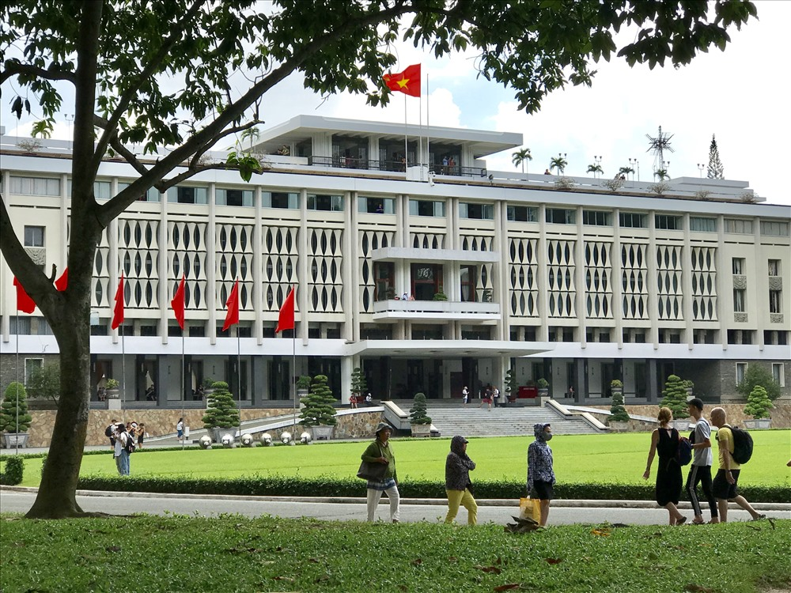
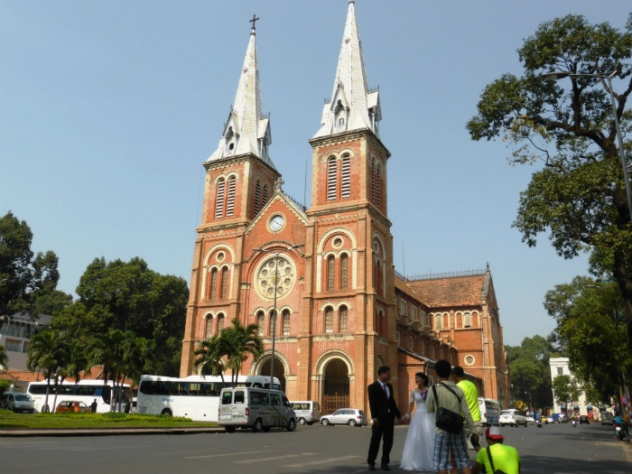
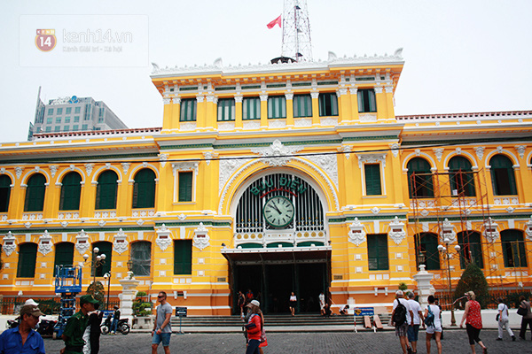

Ho Chi Minh City

Ho Chi Minh city, or Saigon by short, is the most bustling and busiest hub for tourists. It is the financial center as well as the home of big national and international companies. I have lived here for a short year before coming to the States. To me, this is a very very special place. I had traveled all my childhood to all places from the North down to Da Lat, but I always pushed off to travel to SaiGon when I was little. Not until 2015, I first came there for jobs and had the best year that I have had. It always posesses a small room in my heart that I will never reserve for anything else. If you get a chance to live there for couple months, to explore it and blend in with locals, you will certainly see its pure beauty and the friendly and fun people.
Before the trip
Language
Official language is Vietnamese. English will be displayed as an alternative, but not often seen. Young people can speak English, since it is the required second language we have to take from elementary school.Weather
The weather in Saigon is very nice. It is generally hot, might be a bit of heat-wave at noon and slightly chilly when the sky turns swarthy.If you are planning to go between June and November, pack an umbrella just in case you need it. There is definitely not raining cats and dogs, but might be some shortly irregular rainy afternoon, mostly in August. Apparently, winter does not hold true for Saigon. It is just less hot and there might be some raining and breezes sometimes at night.
Best time to visit
All year round except for the end of Jaunary and February. It would not be a good time to visit because people would usually go home for Tet holiday, and only get back to work at late February. You would not neither see much nor feel the vibes of the city without its people.Currency
The currency is Vietnam dong. You will need to exchange cash prior to your arrival. Cards of any kind will not be accepted except in some places like hotels. You would not want to use US dollars because if you purchase something for only couple cents, you would not get back the change, so better have Vietnamese dongs in your purse.Tips: Please do not exchange a whole lot money at the airport. It is not a win-win option if you compare the rate with other local places. If you exchange money for the whole VN trip, get some Vietnam dongs there, and take your cash to either Kim Mai jewelry at 84 Cong Quynh, District 1, HCMC or SJC (Saigon Jewelry Joint Stock Company) at 40-42, Phan Boi Chau street, Ben Thanh, District 1, HCMC. They are only 20 minute walk to Ben Thanh market. A lot of locals exchange to US dollars and other currencies in those shops.
Arrival
If you arrive by air planes, the Tan Son Nhat international airport will be in the center of the city, so it is quite easy and affordable to grab a regular taxi or a GrabBike to get to the hotel or to your place. Uber is not a common choice. We have an alternative called GrabBike, and it is somewhat cheaper than a regular taxi.If you arrive from another city in Vietnam by bus, Mien Dong Coach Station will be in Binh Thanh district which is 30 minute drive from the airport. The fair is way cheaper than the airfair. Be aware that theft happens in all crowded cities around the world; Saigon is no different, so keep an eye on your bags when you are there.
There are also other bus services of some tourism companies to choose from such as Saigon tourists or Viet travel. They are, in my opinion, will be somewhat pricier but it is safer.
Accommodations
There are plenty of hotels all over the city. If you stay with Airbnb, stick around the central areas such as District 1, District 3, District 5,Binh Thanh District. If you are looking out for a reliable place, I would suggest looking at:- Bali Boutique Hotel, Bui Vien Street, District 1
- Halo Hotel, Thu Khoa Huan street, District 1
- Golden Central Hotel Saigon, Ly Tu Trong street, District 1
- Ipeace Hotel, Pham Ngu Lao street, District 1
- Oscar Saigon Hotel, Nguyen Hue street, District 1
- Palace Hotel Saigon, Nguyen Hue street, District 1
- Silverland Central Hotel & Spa, Le Lai street, District 1
- Hotel Majestic Saigon, Dong Khoi street, District 1
- Liberty Central Saigon Riverside Hotel, Ton Duc Thang street, District 1
- Red Hotel, Nguyen Hue street, District 1
Transportations
- Scooters: you will be overwhelmed by the countless number of scooters we have here in Vietnam. It is the main means of transportation. It is really cool to ride a scooter around. It can be rented with a decent price or you can even afford to purchase one. However, if you are not brave and risky enough, scooters are not recommended for you to ride it here. Saigon streets are very busy and dangerous too.
- GrabBike: cars are more expensive, so GrabBike is scooter operated. It is low-priced, and can be easily shared. You can share a grab car with a local.
- Taxi/GrabBike: Taxi is more costly.
- Public metros/Buses: not popular. The public transportation here is not developed and utilized. It is hard to get to places.
Where to go?
1. District 1
District 1 is the largest and wealthiest neighborhood in HCMC. It attracts a big number of international banks and companies.
This is also the area where a lot of administrative offices and consulates locate in.
I enjoyed the supermarkets in Japanese and Korean neighborhoods also. There are plenty of them there. It seems like
you see a tiny little Asia in this District.
This was of course my favorite district that I used to hang out very often when I was there. My favorite street was
Nguyen Hue Street. I love walking around with my friends enjoying milk tea and laughing with them. There is
not much to see at day time, yet it is very busy and fun at night.
* Independence Palace
Also known as Norodom, was the home and workplace of the President of South Vietnam during the Vietnam War. It is open from 7.30 a.m. to 11 a.m., and 1 p.m. to 4 p.m. everyday. It is located at Nam Ky Khoi Nghia street in District 1. The entry fee is around $2.
* Notre Dame Cathedral of Saigon
Officially Cathedral Basilica of Our Lady of The Immaculate Conception is a cathedral located near big buildings in downtown, at Cong xa Paris street. It is open for visitors from 7 a.m. to 7 p.m. on weekdays, closed on weekends. It is quite special with its unique architecture, though fairly small.
* Saigon Central Post Office
It is near the Notre Dame Cathedral, can easily be seen when you walk around the District. It is cool with its artistic architecture. Well-known as one of the ideal wedding photoshoot places, and also a tourist attraction.It is open for public from 7 a.m. to 7 p.m. everyday.

* Ben Thanh Market
People do not go to this market on a daily basis but it is still busy bearing its historical price. It is mainly
visited by tourists looking for local ao dai and textiles.
This market is fun and cool, a good place to seek souvenirs. You have to bargain with them for a good price.
Usually half the original up until you settle the price.

5. Cu Chi Tunnels
One of the famous and of paramount importance tunnels in Vietnam War. It is open for puclic from 9 a.m. to 5 p.m.
The entry fair is from $4.
You can take a bus 13 from Ben Thanh market and hop on bus 79 from Cu Chi District to the Ben Duoc tunnel. If you take a taxi, it
takes you roughly two hours.
You might spend 2-5 hours there, depending on what your plan is. If you only visit the Ben Duoc tunnel, that
can be done within 2 hours. However, there are other activities you might enjoy, so it takes another 2 hours to go
experience such fun games and activities.
What to eat?
Street food is always my pals when I travel. If you want to try some, here is the recommended list that is easy to be found anywhere:- Coffee (Cà phê sữa đá) - $1-2
- Cold cut sandwiches (Bánh mì) - $1-2
- Rice noodle soup with pork broth (Hủ tiếu Nam Vang) - $2-3
- Combo sticky rice (Xôi thập cẩm) - $1-2
- Dessert (Chè) - $1-2
- (Bánh xèo) - $2-3
- Vietnamese seafood noodle soup (Bún mắm) - $2-3
- (Bún riêu) - $2-3
- Pork chop Rice platter with broken rice (Cơm tấm) - $2-3
- Rice vermicelli salad - $2-3
- Rice paper salad (Bánh tráng trộn) - $1-2
- Rolled rice pancake (Bánh cuốn) - $1-2
- Bubble tea (Trà sữa)
For Pork chop Rice platter: Com tam Thuan Kieu: 26 Ton That Tung street, Ben Thanh Ward, District 1.
For Che: Che Hien Khanh: 718 Nguyen Dinh Chieu street, Ward 1, District 3.
For Banh xeo: Banh xeo Nhat Ban (Shu): 15B/11 Le Thanh Ton street, District 1.
For Rolled rice pancake : Hong Phat: 17 Nguyễn Thị Minh Khai street, District 1.